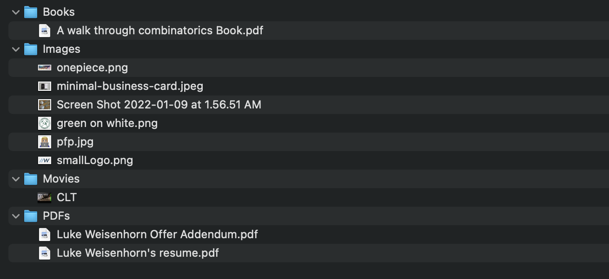

This project while simplistic at its core, seeks to solve an ongoing problem many people deal with on their computers, a messy downloads folder. Over the course of a semester, I download numerous pictures, code snippets, and assignments and the files build up fast and quickly becomes a daunting task to sort through.
By utilizing the Python OS module, you can iteratively search at a given filepath for all of the files contained beneath it. For each file beneath it, the program searches for keywords in the file name then the file type and based on that it moves the file to the appropriate folder.
Finally, when coupling the Python program with a Shell Script that uses a Cron job, the sorting program can be automatically scheduled to run. I have configured it on my personal laptop to run every Sunday Evening to make sure I start the week with a tidy computer.
Finished result of sorted downloads folder